Chapitre 1 :Introduction
Les techniques de l'information et de la communication:
Catégories et Objectifs:
Catégories:
Composants de TIC:
ils se divisent en deux parties:
Caractéristiques:
Initiation aux techniques de communication:
1-Objetctifs de la communication :
la communication est basé sur deux ou plusieurs émetteur/récepteur qui échange des informations a travaers des canaux de diffusion, la communication ici ce fait en forme de boucle car chaque information reçu aura un feedback en réponse qui sera lui aussi, répondu avec un autre feedback.
quelques définitions utiles :
3-types de communication:
4-les schémas de communication
Chapitre 2 : Les réseaux informatiques
Réseau (network):
Ensemble d’ordinateurs et de terminaux autonomes connectes entre eux pour échanger des informations numériques selon des règles définies. Un réseau s’appuie sur deux notions l’interconnexion et la communication
Mise en réseaux:
le processus qui relie des ordinateurs entre eux afin qu’ils puissent se partager des ressources
Evolution:
au début les réseaux étaient destinés qu’au transport de données informatiques. Mais aujourd’hui ils transportent tout autant les donnes que la parole et la vidéo
Les caractéristiques de base d’un réseau :
La topologie:
soi physique et c’est la manière dont les équipements sont interconnectés, soi logique et c’est la manière dont les équipements communiquent entre eux.
Le débit:
la quantité de données numériques transmises par seconde
La distance maximale :
qui dépend de la technologie mise en œuvre.
Le nombre de nœuds maximum :
que l’on peut interconnecter.
Quelques terminologies en réseau:
Station de travail:
toute machine capable d’envoyer des données vers les réseaux
Nœud :
C’est une station de travail pouvant être adressée par un numéro unique.
Paquet :
C’est la plus petite unité d’information pouvant être envoyé, il contient l’adresse de l’émetteur et du récepteur et les données à transmettre.
Réseaux Homogènes :
Tous les ordinateurs sont de même constructeurs
Réseaux Hétérogènes :
Les ordinateurs reliés au réseau sont de constructeurs divers
Éléments d'un réseau:
Classification des réseaux:
par portée l’envergure:
L’ouverture (leur utilisation):
Les supports de connexion : filaires et non filaires
Réseaux filaires :
Réseaux sans fils :
Le type d’organisation :
Le type de topologie
C'est une structure réseau hybride reprenant un câblage en étoile regroupant différents nœuds de réseaux.
Chapite 3 : Le Modele OSI
1) Les Composants matériel d’un Réseau informatique:
•Les cartes réseau (NIC) :
Les NIC sont des composants matériels installés à l'intérieur d'un ordinateur et connectés à une prise Ethernet ou Wi-Fi. Permettent à l'ordinateur de communiquer avec d'autres ordinateurs en transmettant et réceptionnant des données via des protocoles de communication spécifiques.
Un switch est un composant matériel qui connecte des appareils sur un réseau local (LAN) en utilisant des adresses MAC et stocke ces adresses dans une table de correspondance.
Les données sont envoyées uniquement à l'appareil destinataire, ce qui améliore la communication entre les appareils connectés.
Les switches sont disponibles en différentes tailles et offrent des fonctionnalités avancées pour la gestion du trafic, la qualité de service et la gestion des VLAN.
• HUB :
Un hub est un composant matériel qui connecte des appareils sur un réseau local, contrairement à un switch, il répète les données reçus à tous les autres, sans table de correspondance.
Les switches plus efficace ont remplacé les hubs pour la gestion du trafic réseau, mais les hubs sont encore utilisés pour des réseaux de petite taille ou des applications spécifiques.
2) Le Modèle OSI :
Le modèle OSI (Open Systems Interconnection) divise les communications de réseau en sept couches distinctes (•La couche physique • La couche liaison de données • La couche réseau • La couche transport • La couche session • La couche présentation • La couche application), chacune avec des fonctions spécifiques pour la communication de données entre les appareils de réseau.
Il est souvent utilisé comme référence pour la conception et la mise en œuvre de réseaux informatiques.
3) Le Modèle TCP/IP :
Le modèle TCP/IP (Transmission Control Protocol/Internet Protocol) est
Une référence qui divise les communications de réseau en quatre couches (•La couche liaison de données• La couche réseau• La couche transport• La couche application) distinctes utilisée pour la conception et la mise en œuvre et en place de réseaux informatiques modernes.
4) L’adressage :
Adressage IP :
Internet Protocol est le numéro d'identification de chaque ordinateur connecté à un réseau qu'il appartient.
On a deux modes d’adressage :
•L’adresse IPV4 :
Une adresse IPV4 est codé en 32 bits qu'on divise en 4 octet et chaque octet est convertit en décimal
Remarque:
IPV4 est composé de deux parties : Adresse réseau, Adresse hôte.
Un réseau est identifiable comme un hôte lorsque la partie réseau possède des bits identiques.
Le nombre de bits dans la partie hôte détermine le nombre de machines disponibles sur ce
réseau .
•L’adresse IPV6 :
IPV6 est codé sur un mot de 128 bits, qu'on divise en 8 mots de 16 bits séparés par le caractère «:», chacun d'eux est en hexadécimal.
Chapitre 4: Internet et Web
Introduction:
www (world wide web):
Le Web est un système hypertexte publique qui permet de consulter des pages de sites sur internet. Il a été inventer par Tim Berners-Lee et Robert Cailliau plusieurs années après internet
Principe du web:
Accéder grâce a Internet à des documents de différentes natures situés sur des machines reliées par des liens hypertextes
URL (uniform resource locator):
Est le nom unique d’une page Internet, elle contient l’adresse du serveur et l’adresse de la page du serveur
Aspects techniques du web:
Url: ce qui permet au web d’accéder à une page voulue
Http: protocole de communication client-serveur
Html: langage qui permet d’écrire de l’hypertexte et de créer une page web
Page web et site web:
Une page web est un document simple écrit à l’aide du langage html et peut inclure du contenu multimédia. Toute page web est associée à une url qui permet d’y accéder
Un site web est un ensemble de pages web qui partagent une même thématique et accessible grâce à une url de base commune et qui sont généralement localisées sur un même serveur
Création d’une page html:
Les balises:
Un fichier HTML doit comporter au minimum ces 4 balises:
< html > ... < / html >: Délimite le début et la fin du document
< head > ... < /head >: Entête du document
< title > ... < / title >: Titre du document
< body > ... < /body > : Corps du document
Les titres et paragraphes
< hn > ... < hn > : Titre de niveau n :1 à 6.
< p > ... < p > : paragraphe
Chapitre 5 : Système de Gestion de Version
• Git, c’est quoi ?
Git est l’un des outils les plus populaires pour la gestion de code source ,il a été créé en 2005 par Linus Torvalds le créateur de linux.
Il sert à enregistrer un historique des modifications effectuées sur un projet ce qui permet de revenir à une ancienne version en cas de problème
A quoi sert concrètement un système de gestion de version :
Ce type de systèmes permet de coordonner le travail entre plusieurs de ses utilisateurs en conservant l’auteur et l’historique des modifications apportées sur l’intégralité d’un même projet afin que chaque développeur ait accès aux avancées des autres avec une synchronisation automatique des changements apportés ainsi que d’autres fonctionnalités plus pratique les unes que les autres.
Les deux modèles des logiciels de gestion de version :
Les logiciels de gestion de version sont construits sur l’un des deux modèles suivants :
• Le modèle centralisé :
la source du code du projet est hébergée sur un serveur distant central et les
différents utilisateurs doivent se connecter à ce serveur pour travailler sur ce code.
• Le modèle distribué :
ce modèle est plus simple à utiliser . le code source du projet est
toujours hébergé sur un serveur distant mais chaque utilisateur est invité à télécharger et à l’héberger sur sa propre machine.
GitHub, c’est quoi ?
La copie de l’intégralité des fichiers d’un projet et de leur version située sur le serveur central est appelé un dépôt.
GitHub est une plateforme en ligne qui héberge des dépôts et qui permet aux développeurs de collaborer sur le même projet s’il est rendu public en téléchargeant une copie du code source pour le développer et y apporter des modifications.
Git, mode d’emploi :
Afin d’avoir accès à toutes les commandes de git, commençons par l’utiliser à partir de l’invite de commande, on peut y accéder en cherchant « cmd » dans la barre de recherche ou via le raccourci
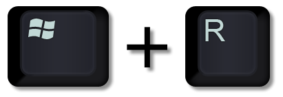 + cmd.
• Installation :
La façon la plus simple d’installer Git est de télécharger la dernière version sur le site officiel
http://git-scm.com/downloads
d’ouvrir le fichier téléchargé et de suivre les instructions à l’écran en laissant toutes les valeurs par défaut.
• Paramétrage :
Nous allons utilise la commande git config qui permet de voir et modifier les variables de configuration qui contrôlent tous les aspects de l’apparence et du comportement de Git.
Nous allons également passer une option --global à notre commande afin d’indiquer à Git que le nom d’utilisateur et l’adresse mail renseignés doivent être utilisés pour tout projet Git.
On va donc taper les commandes suivantes :
Git config --global user.name " (nom d’utilisateur)" et git config --global user.email " (votre boite mail) « à la suite pour renseigner un nom et une adresse email.
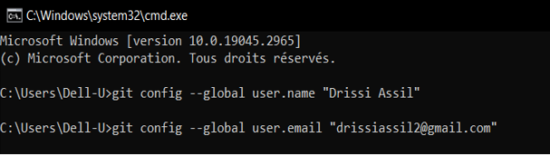
Pour s’assurer que les informations ont bien été enregistrées, vous pouvez taper git config user.name et git config user.email. Les informations entrées devraient alors être renvoyées.
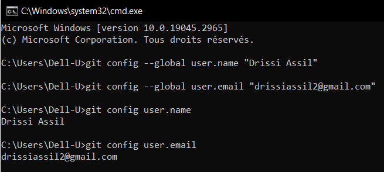
Démarrer un dépôt Git :
Il exist Démarrer un dépôt Git :
Avant cela, il serait préférable de comprendre comment Git conçoit la gestion des informations ainsi que le fonctionnement général de Git.
La gestion des informations selon Git :
Git pense les données à la manière d’un flux d’instantanés où à chaque fois qu’on va valider ou enregistrer l’état d’un projet dans Git, il va prendre un instantané du contenu de l’espace de travail à ce moment, le stocker dans une base de données locale et va enregistrer une référence à cet instantané pour qu’on puisse y accéder par la suite.
Cela fait en sorte que la grande majorité des opérations de Git peuvent être réalisées sans avoir à être connecté à un serveur central distant.
Les états des fichiers :
Dans git un fichier peut avoir deux grands états :
Lorsqu’on démarre un dépôt Git en important un répertoire déjà existant depuis notre machine, les fichiers sont au départ tous non suivis. On va donc déjà devoir demander à Git de les indexer et de les valider.
Lorsqu’on clone un dépôt Git déjà existant les fichiers sont tous déjà suivis par défaut.
Ensuite, chaque fichier suivi peut avoir l’un de ces trois états :
Lors du démarrage d’un dépôt Git à partir d’un dépôt local, on demande à git de stocker dans la base de données locale l’ensemble des fichiers du projet.
Lors du clonage d’un dépôt déjà existant, les fichiers sont validés par défaut.
Lorsqu’on apporte des modifications à notre projet, les fichiers modifiés vont être considérés comme “modifiés” par Git tant qu’ils n’ont pas été “indexés”, tandis que les nouveaux fichiers vont être “non suivis”.
On dit qu’on “indexe” un fichier lorsqu’on indique à Git que le fichier modifié ou que le nouveau fichier doit faire partie du prochain instantané dans sa version actuelle.
Enfin, lorsqu’on demande à Git de prendre l’instantané les fichiers les fichiers qui en font partie sont à nouveau considérés comme “validés” et le cycle peut recommencer.
Les zones de travail :
Chaque fichier est lié à une zone de travail selon son état
Tout projet Git est composé de trois sections : le répertoire de travail (working tree), la zone d’index (staging area) et le répertoire
Git (repository).
Le répertoire de travail :
il correspond à une extraction unique d’une version du projet. Les fichiers sont extraits de la base de données et sont placés sur le disque afin qu’on puisse les utiliser ou les modifier.
La zone d’index :
elle correspond à un simple fichier qui stocke les informations concernant ce qui fera partie du prochain instantané
Le répertoire Git
l’endroit où Git stocke les méta-données et la base de données des objets de votre projet.
Le processus de travail va ainsi être le suivant : nous allons travailler sur nos fichiers dans le répertoire de travail. Lorsqu’on modifie ou crée un fichier, on peut ensuite choisir de l’indexer. Finalement, on va valider la version indexée de nos fichiers pour les ajouter au répertoire Git.
Créer un dépôt Git à partir d’un répertoire existant :
On va créer un répertoire “projet-git” qui contient deux fichiers texte vides “fichier1.txt” et “README.txt.
Pour initialiser un dépôt Git, on utilise ensuite la commande git init Cela crée un sous répertoire . git qui contient un ensemble de fichiers qui vont permettre à un dépôt Git de fonctionner.
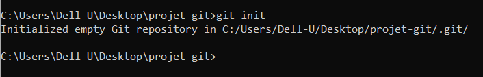
On peut utiliser ici la commande git status pour déterminer l’état des fichiers de notre répertoire.
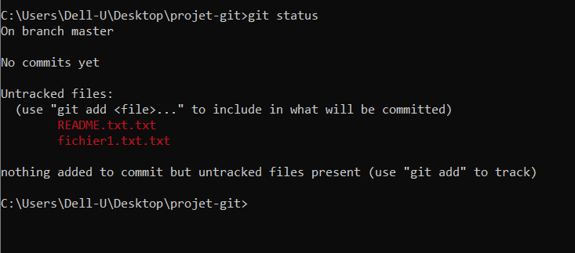
Ici, git status nous informe que notre projet possède deux fichiers qui ne sont pas sous suivi de version.
On utilise la commande git add pour indexer un fichier dont le nom est donné , comme on peut utiliser un “fileglob” pour ajouter tous les fichiers correspondant à un schéma fourni.
Pour cela on utilise des caractères spéciaux comme * ou ?, Lorsque j’écris git add*.txt, je demande finalement à Git d’ajouter à l’index tous les fichiers du projet qui possèdent une extension .txt.
Maintenant on va utiliser la commande git commit pour valider ces fichiers et les ajouter en base
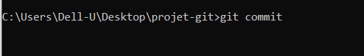
Lorsqu’on utilise git commit sans argument, une nouvelle fenêtre s’ouvre en utilisant l’éditeur par défaut qui est dans la majorité des cas VIM.
Ici, on nous demande d’ajouter un message avec notre commit
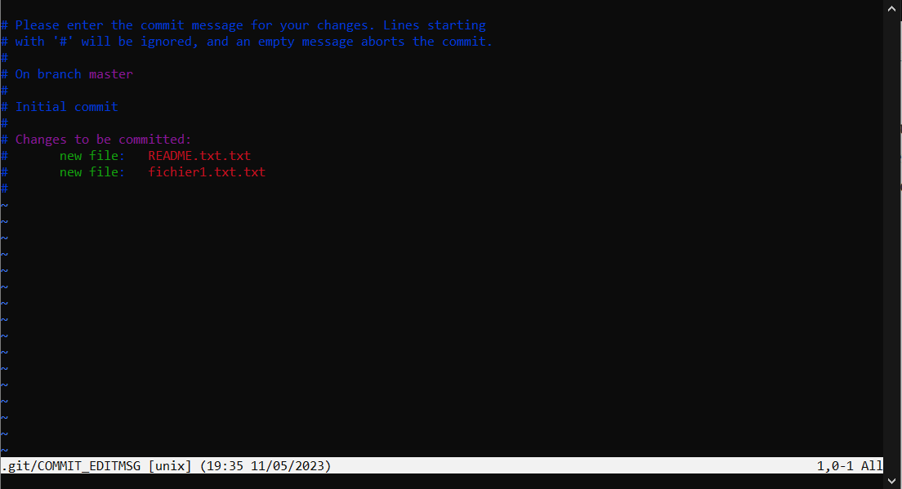
Une fois le message entré, on sort du mode insertion puis on tape :wq et entrée pour valider et quitter ou :x et entrée ou tout simplement ZZ.
Si on effectue à nouveau un git status, voici le message renvoyé :
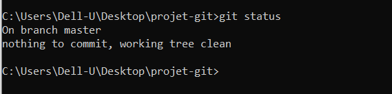
Git nous informe désormais qu’il n’y a plus aucun fichier à vider, ce qui signifie que tous les fichiers sont sous suivi de version et sont enregistrés en base et qu’aucune modification n’a été apportée à ces fichiers depuis le dernier commit.
Cloner un dépôt Git :
La deuxième façon de démarrer un dépôt Git est de cloner localement un dépôt Git déjà existant. Pour cela, on va utiliser la commande Git clone.
On crée un repo sur GitHub :
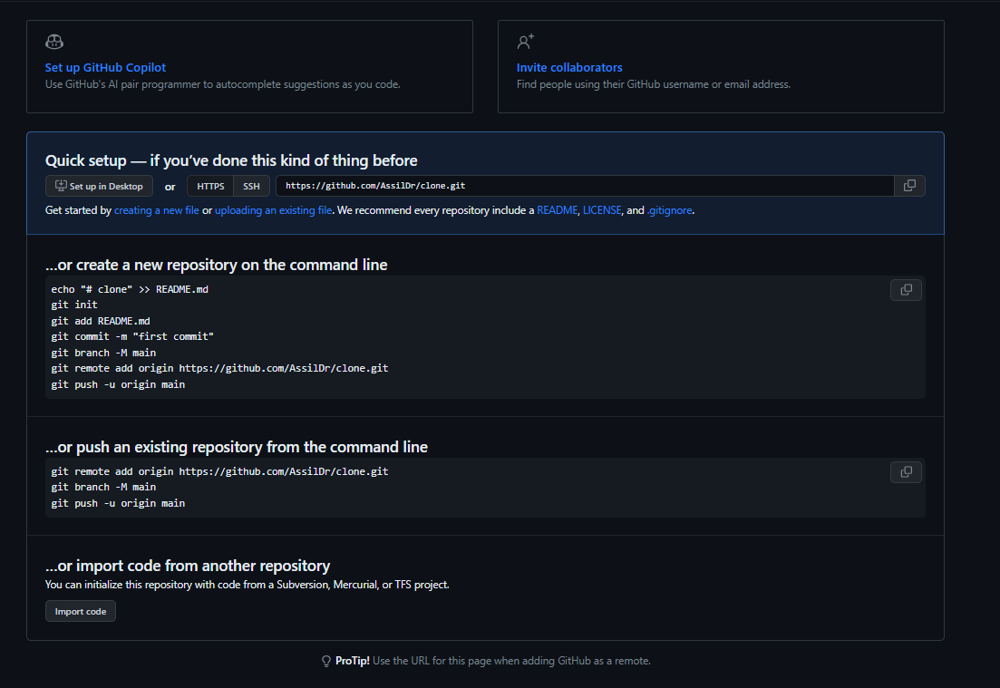
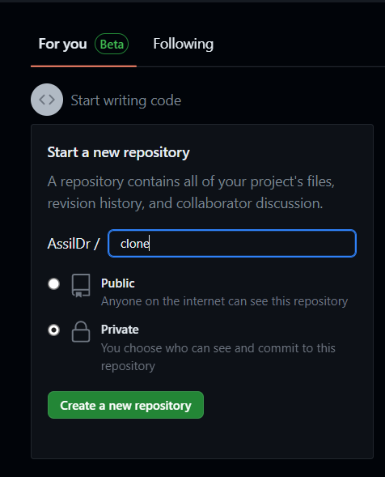
Maintenant, on a créé votre repo sur GitHub.
Nous pouvons maintenant transmettre nos fichiers à ce repo.
git branch -M main
git remote add origin https://github.com/BouchekirRedouane/ExmpleCloneGit.git
git push -u origin main
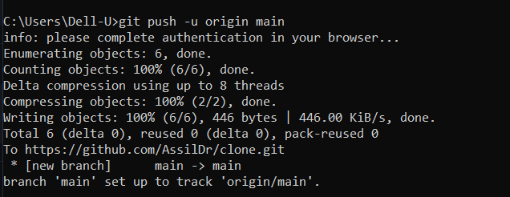
Si on vérifier notre repo sur GitHub, on peut voir les deux fichiers
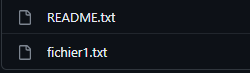
Ajouter ou modifier des fichiers dans un projet et actualiser notre dépôt Git :
A chaque fois qu’on souhaite enregistrer une modification de fichier ou un ajout de fichier dans le dépôt Git, on va devoir utiliser les commandes git add et git .
Une remarque importante à noter est que le commit d’un fichier se basera sur l’état de ce fichier au moment du git add, Donc mieux vaut toujours effectuer un git add juste avant un git commit.
Pour mettre en un coup les fichiers modifiés et déjà sous suivi dans la zone d’index puis pour les valider on peut utiliser ceci : git commit -a.
Consulter l’historique des modifications Git :
La manière la plus simple de consulter l’historique des modifications Git est d’utiliser la commande git log. Cette commande affiche la liste des commits réalisés du plus récent au plus ancien.
Annuler des modifications apportées à un fichier :
Si on veut revenir à un état antérieur enregistré d’un projet.
Il suffit de taper la commande générale git checkout -- nom-du-fichier ou la nouvelle commande spécialisée git restore.
Annuler des modifications apportées à un fichier :
Créer une branche, c’est en quelque sorte comme créer une “copie” de votre projet pour développer et tester de nouvelles fonctionnalités sans impacter le projet de base.
Une branche, dans Git, s’appelle un master et est simplement un pointeur vers un commit particulier. Un commit est un objet qui contient un pointeur vers l’instantané du contenu indexé ainsi que des pointeurs vers le ou les commits le précédant directement.
Ainsi, créer une nouvelle branche dans Git crée simplement un nouveau pointeur plutôt que de recopier l’intégralité du répertoire de travail.
Participents :
- Nom: BOURAS Prénom: MOHAMED MALIK Matricule: 222231567714 Section: 2 Équipe: 1
- Nom: CHAFAI Prénom: RYAD Matricule: 222231568013 Section: 2 Équipe: 1
- Nom: SADMI Prénom: MOHAMED RIAD Matricule: 222231472318 Section: 2 Équipe: 2
- Nom: KHEBBAB Prénom: MOHAMED Matricule: 222231650006 Section: 2 Équipe: 2
- Nom: SEKFALI Prénom: RAYAN Matricule: 222231497120 Section: 2 Équipe: 3
- Nom: FEGAS Prénom: LOKMAN ABDELHAKIM Matricule: 222231639215 Section: 2 Équipe: 3
- Nom: NOURREDDINE Prénom: AHMED ANIS Matricule: 222231606910 Section: 2 Équipe: 4
- Nom: BEDJLOUD Prénom: DAOUD Matricule: 222231395218 Section: 2 Équipe: 4
- Nom: DRISSI Prénom: ASSIL Matricule: 222231609502 Section: 2 Équipe: 5
- Nom: OUALI Prénom: SOHEIB ABDERRAHMANE Matricule: 222231564504 Section: 2 Équipe: 5